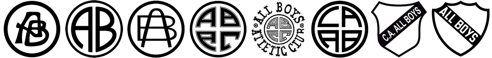

ESCUDOS

En el transcurso de su historia, All Boys tuvo varios escudos, con distinta relevancia institucional, algunos con más tiempo en camisetas y otros en la identificación de los carnets. Un detalle en común son los colores, nunca se varió del blanco y negro.
El primer escudo fue diseñado por Ernesto Bonanni, uno de los socios fundadores de la institución. Se lució por primera vez en 1914 cuando All Boys disputó el torneo de división intermedia. El escudo se utilizó hasta el año 1919 y solo se volvió a utilizar en el 2013 en la camiseta conmemorativa del centenario.
El segundo comenzó a utilizarse en el año 1922, que terminó siendo el que más años se utilizó en la historia del club. Se utilizó en forma continua hasta 1930 y en 1937 reapareció por una década hasta 1947. Volvió en 1958, y fue escudo en diversos equipos hasta fines de la década de 1960. El 21 de octubre de 1972 se volvió a utilizar con motivo festivo por el ascenso Primera División. Se utilizó por última vez en 1973.
El tercero se utilizó en la camiseta desde 1930 y hasta 1932. El diseño consistía en una letra "A" sobre una letra "B". en un círculo característico de los escudos anteriores.
El cuarto escudo adoptó por primera vez las iniciales ABAC, de All Boys Athletic Club. Apareció en el año 1932 en recibos del club y en el buzo de arquero en distintos encuentros pero por poco tiempo.
En el caso del quinto escudo, su mayor presencia estuvo en los carnets, el mismo contaba con la inscripción en palabras alrededor del escudo en la portada, en la cual se siguió utilizando hasta aproximadamente el año 1943.
El sexto escudo se comenzó a utilizar en 1944 cuando la institución obtuvo la personería jurídica como asociación civil, All Boys modificó la distribución de las siglas en su escudo pasando a ser CAAB, de Club Atlético All Boys, con la traducción al español. Este escudo fue característico en todos los carnets, también con las palabras del nombre rodeando el escudo en la portada hasta fines de la década de 1960. En 1982 reaparece pero por primera vez en la camiseta y se utilizó alternadamente hasta finales de los años 1980. En 1994 volvió a utilizarse en camisetas hasta el año 2000 volviendo a aparecer en la temporada 2002-03. En el año 2016 fue utilizado por última vez en una camiseta suplente.
El séptimo escudo, utilizado por primera vez en el año 1967, presentó las palabras All Boys completa sobre una franja negra en diagonal. Primero comenzó en los carnets y en las instalaciones del club. Más tarde se utilizó en camisetas desde 1987 hasta 1994. En el año 2000 volvió a aparecer y, salvo en 2002-03, continuó siendo el escudo hasta la actualidad.
El octavo escudo apareció en 1979, en el séptimo año consecutivo de All Boys en Primera División. Apareció en un tamaño más grande que el habitual y en el centro de la camiseta, característica optada por varios clubes en esa época. No fue trascendente porque solo se utilizó dos años, hasta 1980 inclusive.